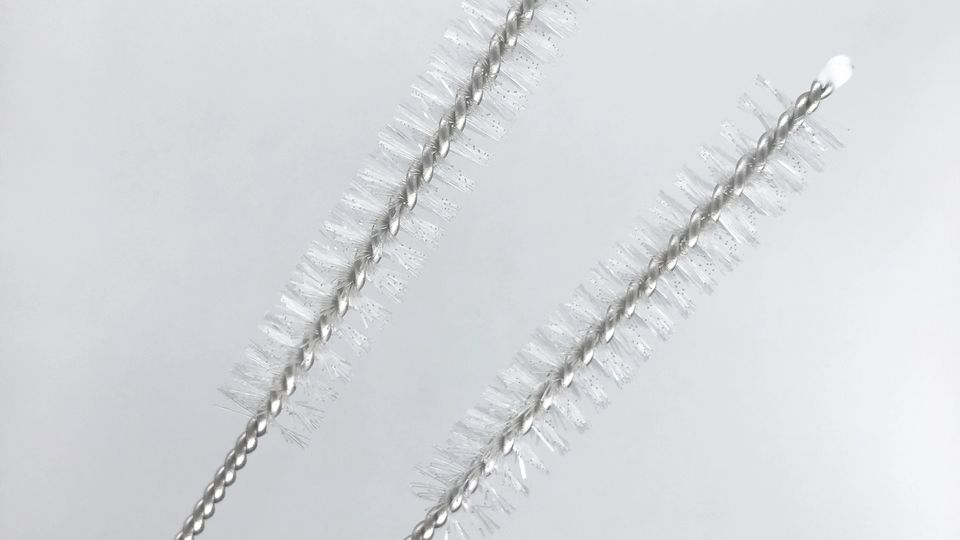
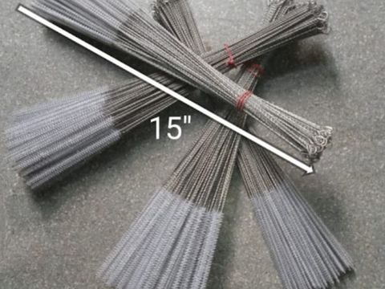
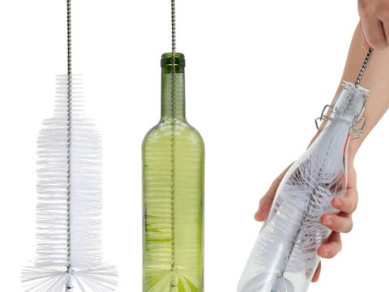
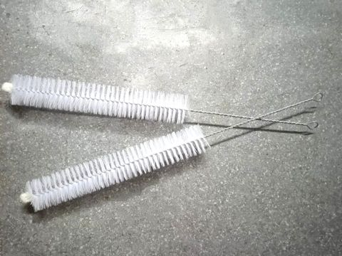
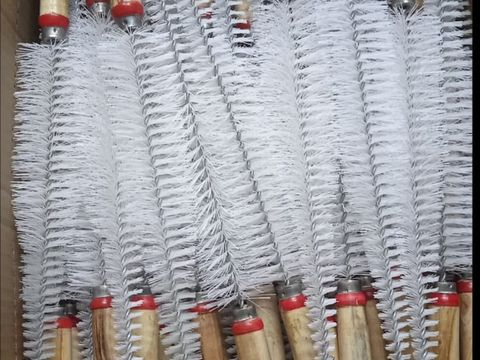
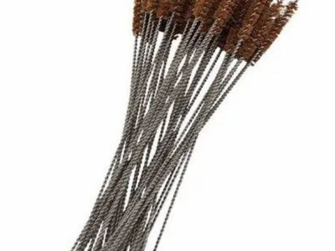
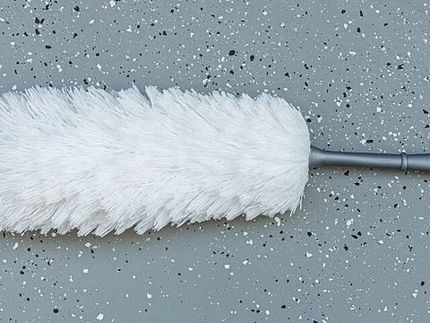
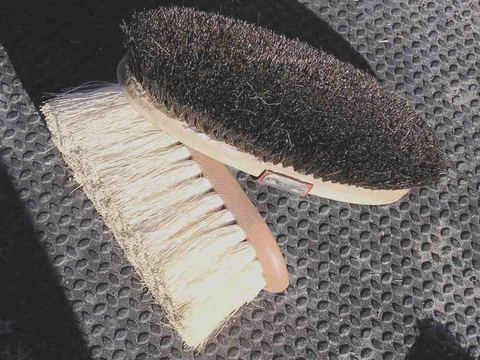
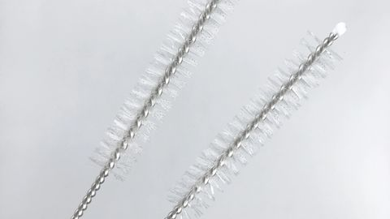

Brush manufacturers, Sion West, Mumbai
Nylon and machine brushes, made in Mumbai since 1990
Test tube, bottle, tube, machine and dairy brushes from our own workshop in Sion West. Small orders welcome, custom sizes made to your drawing.
- Own workshop
- Custom sizes
- Pan-India dispatch
- GST invoiced

- 1990Established
- 8Brush families
- 50Pieces minimum order
- 3 to 7Days to dispatch
Price list
Eight brush families, priced up front
Tap any row for sizes. Prices shown are indicative and exclude GST. For any other brush, price on contact.
- 01

- 02

- 03

- 04

- 05

- 06

- 07

- 08

MOQ is the minimum per size, not per order. Custom brushes are quoted after we see the drawing.
Why buyers come back
Four things that matter when you order brushes
Made here, not resold
Bristles are set, trimmed and checked in our Sion West workshop.
Any size, any stiffness
Nylon, PP, coir or horse hair, from 3 mm tube brushes to 100 mm machine brushes.
Small orders accepted
50 to 100 pieces per size. Repeat buyers reorder on the same drawing.
GST invoice every time
GSTIN 27ANPPJ0959B1ZY. Input credit for registered buyers.
Specifications
Materials we work in
If your requirement falls outside this list, ask. Most of it can be made to order.
| Parameter | What we offer |
|---|---|
| Bristle material | Nylon 6.6, polypropylene, black coir fibre, horse hair |
| Bristle diameter | 0.10 mm to 0.50 mm, soft to stiff |
| Handle or stem | Twisted stainless wire, galvanised MS wire, aluminium, PVC, wood |
| Brush diameter | 3 mm for tube brushes up to 100 mm for machine and cow brushes |
| Overall length | 20 cm to 150 cm, or cut to your dimension |
| Typical MOQ | 50 to 100 pieces per size |
| Packing | Poly bags, cartons, private label on request |
| HSN code | 9603 |
Ordering
Three steps, no account needed
Tell us the item
Product, size, bristle and quantity. A photo or drawing helps.
Get a quote
Price, MOQ and delivery time, usually the same working day.
Dispatch
GST invoiced and sent by courier or transport.
Questions
What buyers usually ask
Are you a manufacturer or a trader?
Manufacturer. We have made brushes in Sion West, Mumbai since 1990 and supply directly. We do not resell other brands.
What is the minimum order?
50 to 100 pieces per size for catalogue items. For custom brushes made to a drawing, the minimum depends on tooling and is quoted case by case.
Do you deliver outside Mumbai?
Yes. Small parcels go by courier and cartons by transport, usually 3 to 7 working days after confirmation.
Can you make a custom size?
Yes. Send the length, brush diameter, bristle stiffness and handle material, or post a sample. We make nylon, PP, coir and horse hair brushes to order.
Need a brush you cannot find in a catalogue?
Send the size, the machine or a sample. We will tell you what we can make and what it costs.